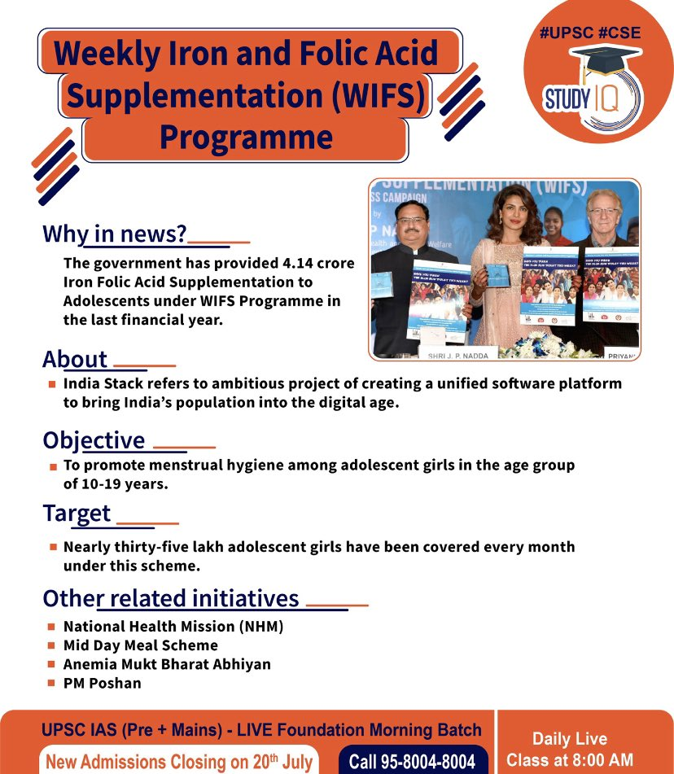

Dr. Muthulakshmi Reddy Memorial Weekly Iron and Folic Acid Supplementation (WIFS) Program
The Dr. Muthulakshmi Reddy Memorial Weekly Iron and Folic Acid Supplementation (WIFS) Program is a public health initiative by the Tamil Nadu government in India. It aims to combat anemia, particularly among adolescent girls and boys, especially in rural areas.
Objective
The primary objective of the WIFS program is to reduce the prevalence of anemia among adolescent girls and boys. Anemia, often caused by iron deficiency, can lead to various health issues, including fatigue, weakness, impaired cognitive development, and reduced immunity. By providing iron and folic acid supplements, the program aims to improve the overall health and well-being of adolescents.
Benefits
- Weekly distribution of iron and folic acid tablets to school children.
- Iron is essential for the production of hemoglobin, the protein in red blood cells that carries oxygen.
- Folic acid is crucial for cell growth and development, particularly important for adolescent girls.
- Regular consumption of these supplements helps to increase iron levels, improve hemoglobin levels, and prevent anemia.
Other Details
The program is named after Dr. Muthulakshmi Reddy, a pioneering social reformer, medical professional, and legislator in India. It is implemented in government and government-aided schools across Tamil Nadu. The program is a crucial intervention to address the widespread issue of anemia among adolescents, particularly in rural areas where access to nutritious food may be limited. By improving the health of adolescents, the program contributes to their overall development and future well-being.
Recent Updates
The Tamil Nadu government has been focusing on strengthening the implementation of the WIFS program. Efforts are being made to ensure regular supply of tablets and to raise awareness about the importance of adherence to the supplementation schedule. The program also includes components of health education and counseling to promote healthy dietary habits and lifestyle choices among adolescents.
Overall, the Dr. Muthulakshmi Reddy Memorial Weekly Iron and Folic Acid Supplementation Program is a vital initiative to address anemia among adolescents in Tamil Nadu. By providing essential supplements and promoting health awareness, the program contributes to improving their health, cognitive development, and overall well-being.
